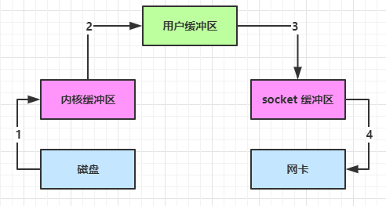
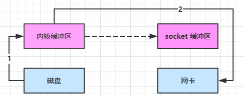
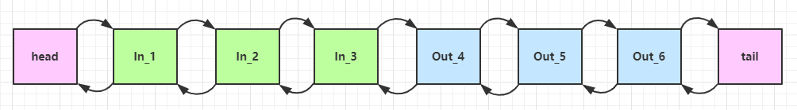
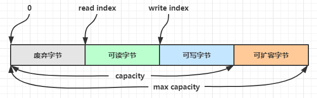

Netty¶
[!Important]
Netty 网络编程开坑！！！q(≧▽≦q)
NIO基础¶
[!Tip]
NIO：Non-blocking I/O 或 New I/O
三大组件¶
Channel & Buffer¶
channel 有一点类似于 stream，它就是读写数据的双向通道，可以从 channel 将数据读入 buffer，也可以将 buffer 的数据写入 channel，而之前的 stream 要么是输入，要么是输出，channel 比 stream 更为底层
graph LR
channel --> buffer
buffer --> channel
常见的 Channel 有
- FileChannel
- DatagramChannel
- SocketChannel
- ServerSocketChannel
buffer 则用来缓冲读写数据，常见的 buffer 有
- ByteBuffer
- MappedByteBuffer
- DirectByteBuffer
- HeapByteBuffer
- ShortBuffer
- IntBuffer
- LongBuffer
- FloatBuffer
- DoubleBuffer
- CharBuffer
Selector¶
从传统服务器设计开始：
多线程版设计¶
graph TD
subgraph 多线程版
t1(thread) --> s1(socket1)
t2(thread) --> s2(socket2)
t3(thread) --> s3(socket3)
end
多线程版缺点⚠
- 内存占用高
- 线程上下文切换成本高
- 只适合连接数少的场景
线程池版设计¶
graph TD
subgraph 线程池版
t4(thread) --> s4(socket1)
t5(thread) --> s5(socket2)
t4(thread) -.-> s6(socket3)
t5(thread) -.-> s7(socket4)
end
线程池版缺点⚠️
- 阻塞模式下，线程仅能处理一个 socket 连接
- 仅适合短连接场景
selector 版设计¶
selector 的作用就是配合一个线程来管理多个 channel，获取这些 channel 上发生的事件，这些 channel 工作在非阻塞模式下，不会让线程吊死在一个 channel 上。适合连接数特别多，但流量低的场景（low traffic）
graph TD
subgraph selector 版
thread --> selector
selector --> c1(channel)
selector --> c2(channel)
selector --> c3(channel)
end
调用 selector 的 select() 会阻塞直到 channel 发生了读写就绪事件，这些事件发生，select 方法就会返回这些事件交给 thread 来处理
ByteBuffer¶
示例¶
@Slf4j
public class ChannelDemo1 {
public static void main(String[] args) {
try (RandomAccessFile file = new RandomAccessFile("data.txt", "rw")) {
FileChannel channel = file.getChannel();
ByteBuffer buffer = ByteBuffer.allocate(10);
do {
// 向 buffer 写入
int len = channel.read(buffer);
log.debug("读到字节数：{}", len);
if (len == -1) {
break;
}
// 切换 buffer 读模式
buffer.flip();
while(buffer.hasRemaining()) {
log.debug("{}", (char)buffer.get());
}
// 切换 buffer 写模式
buffer.clear();
} while (true);
} catch (IOException e) {
e.printStackTrace();
}
}
}
使用步骤：
- 向 buffer 写入数据，例如调用 channel.read(buffer)
- 调用 flip() 切换至读模式
- 从 buffer 读取数据，例如调用 buffer.get()
- 调用 clear() 或 compact() 切换至写模式
结构¶
ByteBuffer 有以下重要属性
- capacity
- position
- limit
初始状态

写模式下，position 是写入位置，limit 等于容量，下图表示写入了 4 个字节后的状态

flip 动作发生后，position 切换为读取位置，limit 切换为读取限制

读取 4 个字节后，状态

clear 动作发生后，状态
compact 方法，是把未读完的部分向前压缩，然后切换至写模式

常见方法¶
分配空间¶
以字节为单位分配
// 分配Java堆内存
Bytebuffer buffer = ByteBuffer.allocate(16);
// 分配直接内存，分配效率较堆区低，读写效率高
ByteBuffer buffer = ByteBuffer.allocateDirect(16);
写入数据¶
有两种方式：
- channel 的 read 方法
- buffer 自己的 put 方法
channel.read(buffer);
buffer.put((byte) 97);
读取数据¶
同样有两种办法
- channel 的 write 方法
- buffer 自己的 get 方法
channel.write(buffer);
buffer.get();
[!Note]
buffer.get(i); // 读取下标i的数据，不会改变position的值 buffer.rewind(); // 重新从开始位置读取 buffer.mark(); // 在该位置做一个标记 buffer.reset(); // 重置到mark标记位置
转换字符串¶
ByteBuffer buffer = StandardCharsets.UTF_8.encode("你好");
ByteBuffer buffer = Charset.forName("utf-8").encode("你好");
buffer.flip();
String str = StandardCharsets.UTF_8.decode(buffer).toString();
[!Warning]
Buffer 是非线程安全的
Scattering Reads¶
分散读取
try (RandomAccessFile file = new RandomAccessFile("3parts.txt", "rw")) {
FileChannel channel = file.getChannel();
ByteBuffer a = ByteBuffer.allocate(3);
ByteBuffer b = ByteBuffer.allocate(3);
ByteBuffer c = ByteBuffer.allocate(5);
channel.read(new ByteBuffer[]{a, b, c});
a.flip();
b.flip();
c.flip();
// ...
} catch (IOException e) {
e.printStackTrace();
}
Gathering Writes¶
将多个 buffer 的数据填充至 channel
try (RandomAccessFile file = new RandomAccessFile("3parts.txt", "rw")) {
FileChannel channel = file.getChannel();
ByteBuffer d = ByteBuffer.allocate(4);
ByteBuffer e = ByteBuffer.allocate(4);
channel.position(11);
d.put(new byte[]{'f', 'o', 'u', 'r'});
e.put(new byte[]{'f', 'i', 'v', 'e'});
d.flip();
e.flip();
channel.write(new ByteBuffer[]{d, e});
} catch (IOException e) {
e.printStackTrace();
}
文件编程¶
FileChannel¶
[!Warning]
FileChannel 只能工作在阻塞模式下
得到FileChannel¶
不能直接打开 FileChannel，必须通过 FileInputStream、FileOutputStream 或者 RandomAccessFile 来获取 FileChannel，它们都有 getChannel 方法
- 通过 FileInputStream 获取的 channel 只能读
- 通过 FileOutputStream 获取的 channel 只能写
- 通过 RandomAccessFile 是否能读写根据构造 RandomAccessFile 时的读写模式决定
读取¶
从 channel 读取数据填充 ByteBuffer，返回值表示读到了多少字节，-1 表示到达了文件的末尾
int readBytes = channel.read(buffer);
写入¶
ByteBuffer buffer = ...;
buffer.put(...); // 存入数据
buffer.flip(); // 切换读模式
while(buffer.hasRemaining()) {
channel.write(buffer);
}
[!Tip]
出于性能的考虑，操作系统会将数据缓存，不会立刻写入磁盘。
可以调用 force(true) 方法将文件内容和元数据（文件的权限等信息）立刻写入磁盘。
关闭¶
channel 必须关闭，不过调用了 FileInputStream、FileOutputStream 或者 RandomAccessFile 的 close 方法会间接地调用 channel 的 close 方法
位置¶
获取当前位置
long pos = channel.position();
设置当前位置
long newPos = ...;
channel.position(newPos);
设置当前位置时，如果设置为文件的末尾
- 这时读取会返回 -1
- 这时写入，会追加内容，但要注意如果 position 超过了文件末尾，再写入时在新内容和原末尾之间会有空洞（00）
Channel互传¶
String FROM = "from.txt";
String TO = "to.txt";
try (FileChannel from = new FileInputStream(FROM).getChannel();
FileChannel to = new FileOutputStream(TO).getChannel();) {
// 传输数据，利用操作系统零拷贝优化效率高
from.transferTo(0, from.size(), to);
} catch (IOException e) {
e.printStackTrace();
}
[!Caution]
channel一次性最大支持2G数据传输，超过2G的文件可进行多次传输
for (long left = size; left > 0; ) { left -= from.transferTo((size - left), left, to); }
Path¶
jdk7 引入了 Path 和 Paths 类
- Path 用来表示文件路径
- Paths 是工具类，用来获取 Path 实例
Path source = Paths.get("1.txt"); // 相对路径 使用 user.dir 环境变量来定位 1.txt
Path source = Paths.get("d:\\1.txt"); // 绝对路径 d:\1.txt
Path source = Paths.get("d:/1.txt"); // 绝对路径 d:\1.txt
Path projects = Paths.get("d:\\data", "projects"); // d:\data\projects
Files¶
// 判断文件是否存在
Path path = Paths.get("helloword/data.txt");
boolean exist = Files.exists(path);
// 创建目录
Path path = Paths.get("helloword/d1");
Files.createDirectory(path);
Path source = Paths.get("helloword/data.txt");
Path target = Paths.get("helloword/target.txt");
// 拷贝文件
Files.copy(source, target);
// 移动文件，StandardCopyOption.ATOMIC_MOVE 保证文件移动的原子性
Files.move(source, target, StandardCopyOption.ATOMIC_MOVE);
// 删除文件
Files.delete(target);
// 遍历文件及目录
Files.walkFileTree(Paths.get("E:/"), new SimpleFileVisitor<>() {...});
网络编程¶
阻塞 和 非阻塞¶
ByteBuffer buffer = ByteBuffer.allocate(16);
// 1. 创建服务器
ServerSocketChannel ssc = ServerSocketChannel.open();
// 2. 绑定监听端口
ssc.bind(new InetSocketAddress(8080));
// 3. 连接集合
List<SocketChannel> channels = new ArrayList<>();
while (true) {
// 4. accept 建立与客户端连接， SocketChannel 用来与客户端之间通信
log.debug("connecting...");
SocketChannel sc = ssc.accept(); // 阻塞方法，线程停止运行
log.debug("connected... {}", sc);
channels.add(sc);
for (SocketChannel channel : channels) {
// 5. 接收客户端发送的数据
log.debug("before read... {}", channel);
channel.read(buffer); // 阻塞方法，线程停止运行
buffer.flip();
debugRead(buffer);
buffer.clear();
log.debug("after read...{}", channel);
}
}
[!Tip]
// 设置为非阻塞模式 ServerSocketChannel.configureBlocking(false); SocketChannel.configureBlocking(false);
Selector¶
- 一个线程配合 selector 就可以监控多个 channel 的事件，事件发生线程才去处理。避免非阻塞模式下所做无用功
- 让这个线程能够被充分利用
- 节约了线程的数量
- 减少了线程上下文切换
创建¶
Selector selector = Selector.open();
绑定 Channel 事件¶
也称之为注册事件，绑定的事件 selector 才会关心
channel.configureBlocking(false);
SelectionKey key = channel.register(selector, 绑定事件);
- channel 必须工作在非阻塞模式
- FileChannel 没有非阻塞模式，因此不能配合 selector 一起使用
- 绑定的事件类型可以有
- connect - 客户端连接成功时触发
- accept - 服务器端成功接受连接时触发
- read - 数据可读入时触发，有因为接收能力弱，数据暂不能读入的情况
- write - 数据可写出时触发，有因为发送能力弱，数据暂不能写出的情况
监听 Channel 事件¶
可以通过下面三种方法来监听是否有事件发生，方法的返回值代表有多少 channel 发生了事件
- 方法1，阻塞直到绑定事件发生
int count = selector.select();
- 方法2，阻塞直到绑定事件发生，或是超时（时间单位为 ms）
int count = selector.select(long timeout);
- 方法3，不会阻塞，也就是不管有没有事件，立刻返回，自己根据返回值检查是否有事件
int count = selector.selectNow();
select 何时不阻塞¶
[!Tip]
- 事件发生时
- 客户端发起连接请求，会触发 accept 事件
- 客户端发送数据过来，客户端正常、异常关闭时，都会触发 read 事件，另外如果发送的数据大于 buffer 缓冲区，会触发多次读取事件
- channel 可写，会触发 write 事件
- 在 linux 下 nio bug 发生时
- 调用 selector.wakeup()
- 调用 selector.close()
- selector 所在线程 interrupt
处理accept事件¶
public static void main(String[] args) {
try (ServerSocketChannel channel = ServerSocketChannel.open()) {
channel.bind(new InetSocketAddress(8080));
// 创建selector并注册事件
Selector selector = Selector.open();
channel.configureBlocking(false);
channel.register(selector, SelectionKey.OP_ACCEPT);
while (true) {
selector.select();
// 获取所有事件
Set<SelectionKey> keys = selector.selectedKeys();
// 遍历所有事件，逐一处理
Iterator<SelectionKey> iter = keys.iterator();
while (iter.hasNext()) {
SelectionKey key = iter.next();
// 判断事件类型
if (key.isAcceptable()) {
ServerSocketChannel c = (ServerSocketChannel) key.channel();
// 必须处理
SocketChannel sc = c.accept();
log.debug("{}", sc);
}
// 处理完毕，必须将事件移除
iter.remove();
}
}
} catch (IOException e) {
e.printStackTrace();
}
}
[!Important]
事件发生后，要么处理，要么取消（cancel），不能什么都不做，否则下次该事件仍会触发，这是因为 nio 底层使用的是水平触发
处理read事件¶
public static void main(String[] args) {
try (ServerSocketChannel channel = ServerSocketChannel.open()) {
channel.bind(new InetSocketAddress(8080));
Selector selector = Selector.open();
channel.configureBlocking(false);
channel.register(selector, SelectionKey.OP_ACCEPT);
while (true) {
selector.select();
// 获取所有事件
Set<SelectionKey> keys = selector.selectedKeys();
// 遍历所有事件，逐一处理
Iterator<SelectionKey> iter = keys.iterator();
while (iter.hasNext()) {
SelectionKey key = iter.next();
// 判断事件类型
if (key.isAcceptable()) {
ServerSocketChannel c = (ServerSocketChannel) key.channel();
// 必须处理
SocketChannel sc = c.accept();
sc.configureBlocking(false);
sc.register(selector, SelectionKey.OP_READ);
} else if (key.isReadable()) {
SocketChannel sc = (SocketChannel) key.channel();
ByteBuffer buffer = ByteBuffer.allocate(128);
int read = sc.read(buffer);
// 客户端关闭连接也会触发read事件，此时需取消该事件
if(read == -1) {
key.cancel();
sc.close();
} else {
buffer.flip();
}
}
// 处理完毕，必须将事件移除
iter.remove();
}
}
} catch (IOException e) {
e.printStackTrace();
}
}
[!Note]
- 为什么要 iter.remove()
- 因为 select 在事件发生后，就会将相关的 key 放入 selectedKeys 集合，但不会在处理完后从 selectedKeys 集合中移除，需要我们自己编码删除，否则后续还会再次触发该事件。
- cancel 的作用
- cancel 会取消注册在 selector 上的 channel，并从 keys 集合中删除 key 后续不会再监听事件
消息边界处理¶
当接收的数据长度大于Buffer时，数据的边界就无法在一次处理中解决
解决思路：
- 一种思路是固定消息长度，数据包大小一样，服务器按预定长度读取，缺点是浪费带宽
- 另一种思路是按分隔符拆分，缺点是效率低（需要遍历消息找到边界）
- TLV 格式，即 Type、Length、Value，类型和长度已知的情况下，就可以方便获取消息大小，分配合适的 buffer，缺点是 buffer 需要提前分配，如果内容过大，则影响 server 吞吐量（规定消息的头部某些字段存储消息长度、类型等数据）
sequenceDiagram
participant c1 as 客户端1
participant s as 服务器
participant b1 as ByteBuffer1
participant b2 as ByteBuffer2
c1 ->> s: 发送 01234567890abcdef3333\r
s ->> b1: 第一次 read 存入 01234567890abcdef
s ->> b2: 扩容
b1 ->> b2: 拷贝 01234567890abcdef
s ->> b2: 第二次 read 存入 3333\r
b2 ->> b2: 01234567890abcdef3333\r
public static void main(String[] args) throws IOException {
ServerSocketChannel ssc = ServerSocketChannel.open();
ssc.configureBlocking(false);
ssc.bind(new InetSocketAddress(8080));
Selector selector = Selector.open();
SelectionKey sscKey = ssc.register(selector, 0, null);
sscKey.interestOps(SelectionKey.OP_ACCEPT);
while (true) {
// 有事件发生则运行，没有则阻塞
selector.select();
// 处理事件
Iterator<SelectionKey> iterator = selector.selectedKeys().iterator();
while (iterator.hasNext()) {
SelectionKey key = iterator.next();
iterator.remove();
// 区分事件类型
if (key.isAcceptable()) {
ServerSocketChannel channel = (ServerSocketChannel) key.channel();
SocketChannel socketChannel = channel.accept();
socketChannel.configureBlocking(false);
ByteBuffer buffer = ByteBuffer.allocate(16);
// 参数3是附件，通常用于存放一些对象，这里存放ByteBuffer，用于解决消息边界问题
SelectionKey scKey = socketChannel.register(selector, 0, buffer);
scKey.interestOps(SelectionKey.OP_READ);
} else if (key.isReadable()) {
try {
// 获取事件源Channel
SocketChannel channel = (SocketChannel) key.channel();
// 获取附件（ByteBuffer）
ByteBuffer buffer = (ByteBuffer) key.attachment();
// 客户端close()断开连接也会触发read事件，但是read会返回-1
int read = channel.read(buffer);
if (read == -1) {
key.cancel();
continue;
}
// 解析消息
split(buffer);
if (buffer.position() == buffer.limit()) {
// 扩容buffer
ByteBuffer newBuffer = ByteBuffer.allocate(buffer.capacity() * 2);
buffer.flip();
newBuffer.put(buffer);
// 替换buffer
key.attach(newBuffer);
}
} catch (IOException e) {
log.error(e.getMessage());
// 发生异常，取消注册
key.cancel();
}
}
}
}
}
private static void split(ByteBuffer buffer) {
buffer.flip();
int oldLimit = buffer.limit();
for (int i = 0; i < buffer.limit(); i++) {
if (buffer.get(i) == '\n') {
int length = i + 1 - buffer.position();
ByteBuffer msg = ByteBuffer.allocate(length);
for (int j = 0; j < length; j++) {
msg.put(buffer.get());
}
msg.flip();
System.out.println(StandardCharsets.UTF_8.decode(msg));
// 继续查找下一个完整消息
i = buffer.position() - 1;
}
}
buffer.limit(oldLimit);
buffer.compact();
}
ByteBuffer 大小分配¶
- 每个 channel 都需要记录可能被切分的消息，因为 ByteBuffer 不能被多个 channel 共同使用
- ByteBuffer 不能太大，比如一个 ByteBuffer 1Mb 的话，要支持百万连接就要 1Tb 内存，因此需要设计大小可变的 ByteBuffer
- 一种思路是首先分配一个较小的 buffer，例如 4k，如果发现数据不够，再分配 8k 的 buffer，将 4k buffer 内容拷贝至 8k buffer，优点是消息连续容易处理，缺点是数据拷贝耗费性能，参考实现 http://tutorials.jenkov.com/java-performance/resizable-array.html
- 另一种思路是用多个数组组成 buffer，一个数组不够，把多出来的内容写入新的数组，与前面的区别是消息存储不连续解析复杂，优点是避免了拷贝引起的性能损耗
处理write事件¶
- 非阻塞模式下，无法保证把 buffer 中所有数据都写入 channel，因此需要追踪 write 方法的返回值（代表实际写入字节数）
- 用 selector 监听所有 channel 的可写事件，每个 channel 都需要一个 key 来跟踪 buffer，但这样又会导致占用内存过多，就有两阶段策略
- 当消息处理器第一次写入消息时，才将 channel 注册到 selector 上
- selector 检查 channel 上的可写事件，如果所有的数据写完了，就取消 channel 的注册
- 如果不取消，会每次可写均会触发 write 事件
public static void main(String[] args) throws IOException {
ServerSocketChannel ssc = ServerSocketChannel.open();
ssc.configureBlocking(false);
ssc.bind(new InetSocketAddress(8080));
Selector selector = Selector.open();
ssc.register(selector, SelectionKey.OP_ACCEPT);
while(true) {
selector.select();
Iterator<SelectionKey> iter = selector.selectedKeys().iterator();
while (iter.hasNext()) {
SelectionKey key = iter.next();
iter.remove();
if (key.isAcceptable()) {
SocketChannel sc = ssc.accept();
sc.configureBlocking(false);
SelectionKey sckey = sc.register(selector, SelectionKey.OP_READ);
// 1. 向客户端发送内容
StringBuilder sb = new StringBuilder();
for (int i = 0; i < 3000000; i++) {
sb.append("a");
}
ByteBuffer buffer = Charset.defaultCharset().encode(sb.toString());
int write = sc.write(buffer);
// 3. write 表示实际写了多少字节
System.out.println("实际写入字节:" + write);
// 4. 如果有剩余未读字节，才需要关注写事件
if (buffer.hasRemaining()) {
// read 1 write 4
// 在原有关注事件的基础上，多关注 写事件
sckey.interestOps(sckey.interestOps() + SelectionKey.OP_WRITE);
// 把 buffer 作为附件加入 sckey
sckey.attach(buffer);
}
} else if (key.isWritable()) {
ByteBuffer buffer = (ByteBuffer) key.attachment();
SocketChannel sc = (SocketChannel) key.channel();
int write = sc.write(buffer);
System.out.println("实际写入字节:" + write);
if (!buffer.hasRemaining()) { // 写完了
key.interestOps(key.interestOps() - SelectionKey.OP_WRITE);
key.attach(null);
}
}
}
}
}
多线程优化¶
优化思路：
- 单线程配一个选择器，专门处理 accept 事件
- 创建 cpu 核心数的线程，每个线程配一个选择器，轮流处理 read 事件
public static void main(String[] args) throws IOException {
// 初始化服务
ServerSocketChannel ssc = ServerSocketChannel.open();
ssc.configureBlocking(false);
Selector selector = Selector.open();
SelectionKey sscKey = ssc.register(selector, 0, null);
sscKey.interestOps(SelectionKey.OP_ACCEPT);
ssc.bind(new InetSocketAddress(8080));
// 初始化工作线程
Worker[] workers = new Worker[Runtime.getRuntime().availableProcessors()];
for (int i = 0; i < workers.length; i++) {
workers[i] = new Worker("worker-" + i);
}
int index = 0;
while (true) {
// 监听连接事件
selector.select();
Iterator<SelectionKey> iterator = selector.selectedKeys().iterator();
while (iterator.hasNext()) {
SelectionKey key = iterator.next();
iterator.remove();
if (key.isAcceptable()) {
SocketChannel socketChannel = ssc.accept();
socketChannel.configureBlocking(false);
// 将连接分配到工作线程
workers[index % workers.length].register(socketChannel);
index++;
}
}
}
}
static class Worker implements Runnable {
private final String name;
private final ConcurrentLinkedQueue<Runnable> queue = new ConcurrentLinkedQueue<>();
private Selector selector;
private volatile boolean isInit = false;
public Worker(String name) {
this.name = name;
}
public void register(SocketChannel socketChannel) throws IOException {
if (!isInit) {
selector = Selector.open();
new Thread(this, this.name).start();
isInit = true;
}
queue.add(() -> {
try {
socketChannel.register(selector, SelectionKey.OP_READ, ByteBuffer.allocate(16));
} catch (ClosedChannelException e) {
throw new RuntimeException(e);
}
});
selector.wakeup();
}
@Override
public void run() {
while (true) {
try {
selector.select();
Runnable task = queue.poll();
if (task != null) {
task.run();
}
Iterator<SelectionKey> iterator = selector.selectedKeys().iterator();
while (iterator.hasNext()) {
SelectionKey key = iterator.next();
iterator.remove();
if (key.isReadable()) {
// 处理消息
}
}
} catch (IOException e) {
throw new RuntimeException(e);
}
}
}
}
[!Note]
为什么使用队列来注册事件，并且还要在工作线程中完成注册？
✔因为当工作线程启动后调用
selector.select()会被阻塞，此时在主线程中注册方法也同样会被阻塞。同时主线程向队列提交注册任务后还需要调用selector.wakeup()使工作线程的selector立即从阻塞状态返回，执行队列中的注册任务。
UDP传输¶
- UDP 是无连接的，client 发送数据不会管 server 是否开启
- server 这边的 receive 方法会将接收到的数据存入 byte buffer，但如果数据报文超过 buffer 大小，多出来的数据会被默默抛弃
// 服务端
public static void main(String[] args) {
try (DatagramChannel channel = DatagramChannel.open()) {
channel.socket().bind(new InetSocketAddress(8080));
ByteBuffer buffer = ByteBuffer.allocate(32);
channel.receive(buffer);
buffer.flip();
// 处理消息
} catch (IOException e) {
e.printStackTrace();
}
}
// 客户端
public static void main(String[] args) {
try (DatagramChannel channel = DatagramChannel.open()) {
ByteBuffer buffer = StandardCharsets.UTF_8.encode("hello");
InetSocketAddress address = new InetSocketAddress("localhost", 8080);
channel.send(buffer, address);
} catch (Exception e) {
e.printStackTrace();
}
}
总结¶
IO模型¶
无论哪种IO模型，数据从设备到用户空间的传输都分为两个阶段：
- 等待数据就绪
- 内核检查数据是否到达（如网卡是否有数据、磁盘是否完成读取）。
- 若未就绪，根据IO模型决定是否阻塞用户线程。
- 数据拷贝
- 将数据从内核缓冲区拷贝到用户缓冲区（如
read()的buf参数）。
同步阻塞（BIO）¶
- 特点：用户线程发起IO操作后一直阻塞，直到数据就绪并完成数据拷贝。
- 流程：
- 线程调用
read()，内核开始准备数据（如等待网卡数据到达）。 - 内核等待数据到达后，将数据从内核空间拷贝到用户空间。
- 拷贝完成后，线程解除阻塞，继续执行。
- 缺点：线程在等待期间无法做其他事，浪费CPU资源。
- 应用场景：简单但并发低的场景（如传统Socket编程）。
同步非阻塞（NIO）¶
- 特点：用户线程轮询检查内核数据是否就绪，期间可执行其他任务。
- 流程：
- 线程调用
read()，若数据未就绪，内核立即返回EWOULDBLOCK错误。 - 线程不断轮询，直到数据就绪后，发起数据拷贝（仍由线程同步完成）。
- 缺点：轮询消耗CPU资源，响应延迟高。
- 应用场景：极少使用，通常结合多路复用替代。
多路复用（IO Multiplexing）¶
- 特点：通过单个线程监控多个IO事件（如
select/poll/epoll），就绪后再同步处理。 - 流程：
- 线程调用
select()，阻塞等待至少一个IO事件就绪。 - 当某个Socket数据就绪，
select()返回，线程再调用read()同步拷贝数据。 - 优点：单线程高效管理多个连接，避免多线程上下文切换。
- 缺点：数据拷贝仍同步进行，且
select有FD数量限制。 - 应用场景：高并发网络服务（如Nginx、Redis）。
信号驱动IO¶
- 特点：通过信号通知数据就绪，数据拷贝仍需线程同步完成。
- 流程：
- 线程注册信号处理函数并调用
sigaction()。 - 内核数据就绪后发送信号，线程再调用
read()同步拷贝数据。 - 缺点：信号处理复杂，实际应用少。
- 注意：严格来说，这不是主流分类，通常归为同步模型。
异步非阻塞（AIO）¶
- 特点：用户线程发起IO操作后立即返回，内核负责数据就绪和拷贝，完成后通知线程。
- 流程：
- 线程调用
aio_read()，内核立即返回。 - 内核完成数据准备和拷贝后，通过回调或信号通知线程。
- 优点：线程完全无需等待，资源利用率最高。
- 缺点：实现复杂，需操作系统支持（如Linux的
io_uring）。 - 应用场景：高性能服务器（如Proactor模式）。
| 模型 | 数据就绪等待方式 | 数据拷贝方式 | 是否同步 |
|---|---|---|---|
| 同步阻塞 | 用户线程阻塞等待 | 用户线程同步 | 同步 |
| 同步非阻塞 | 用户线程轮询检查 | 用户线程同步 | 同步 |
| 多路复用 | 内核批量监控事件 | 用户线程同步 | 同步 |
| 信号驱动IO | 内核异步通知 | 用户线程同步 | 同步 |
| 异步非阻塞（AIO） | 内核全权处理 | 内核异步完成 | 异步 |
多路复用 VS BIO¶
1. 资源占用更少，支持更高并发
- 传统阻塞IO： 每个连接需要分配一个独立线程/进程，线程越多，内存和CPU的消耗越大（例如：1000连接 → 1000线程）。 受限于系统最大线程数和上下文切换成本（线程栈、CPU调度开销）。
- 多路复用： 单线程可管理成百上千个连接（例如：1线程处理1000个连接），资源消耗极低，适合高并发场景（如Web服务器、实时通信）。
2. 避免线程频繁切换
- 阻塞IO的代价： 每个阻塞的线程会被操作系统挂起，当大量线程在等待IO时，CPU时间浪费在线程上下文切换上。
- 多路复用的优化：
只在有IO事件就绪时唤醒线程（如
epoll的事件驱动机制），减少无效的上下文切换，提升CPU利用率。
3. 高响应速度
- 阻塞IO的延迟： 线程需等待IO操作完成，若某一线程阻塞，可能影响其他线程的响应。
- 多路复用的优势：
通过事件机制（如
epoll_wait）即时感知就绪的IO事件，第一时间处理活跃连接（如Redis的单线程高性能）。
4. 统一管理所有连接
- 阻塞IO的分散性： 每个线程独立处理一个连接，逻辑分散，代码复杂度高（如锁竞争、资源同步问题）。
- 多路复用的集中管理： 单线程统一监控所有连接的状态，简化代码逻辑（如Nginx的事件驱动架构），降低多线程编程的难度。
5. 灵活的扩展能力
- 传统阻塞IO的瓶颈： 线程数与连接数线性相关，难以应对突发的高并发（如每秒万级连接）。
- 多路复用的可扩展性：
采用非阻塞事件机制（如
epoll的ET模式），轻松扩展至支持数万甚至百万级并发（如云服务的负载均衡器）。
零拷贝¶
传统的 IO 将一个文件通过 socket 写出
File f = new File("helloword/data.txt");
RandomAccessFile file = new RandomAccessFile(file, "r");
byte[] buf = new byte[(int)f.length()];
file.read(buf);
Socket socket = ...;
socket.getOutputStream().write(buf);
内部工作流程是这样的：

- 磁盘到内核缓冲区： 数据从磁盘读取到内核空间的 Page Cache（通过DMA直接内存访问，无需CPU参与）。
- 内核缓冲区到用户缓冲区：
数据从内核空间拷贝到用户空间（由CPU完成，用户程序通过
read()调用）。 - 用户缓冲区到内核缓冲区：
用户程序调用
send()发送数据，数据从用户空间拷贝回内核的 Socket Buffer（由CPU完成）。 - 内核缓冲区到网卡： 数据从Socket Buffer通过DMA拷贝到网卡，发送到网络。
总拷贝次数：4次（2次CPU拷贝，2次DMA拷贝）
上下文切换：用户态 ↔ 内核态的切换（read()和send()两次系统调用）。
零拷贝（Zero-Copy）的核心思想：消除冗余的数据拷贝和上下文切换，直接在内核空间完成数据传输。

- java 调用 transferTo 方法后，要从 java 程序的用户态切换至内核态，使用 DMA将数据读入内核缓冲区
- 只会将一些 offset 和 length 信息拷入 socket 缓冲区，几乎无消耗
- 使用 DMA 将 内核缓冲区的数据写入网卡，不会使用 cpu
0次CPU拷贝
File file = new File(Paths.get("data.txt").toUri());
FileChannel channel = new FileInputStream(file).getChannel();
channel.transferTo(0L, channel.size(), Channels.newChannel(System.out));
channel.close();
异步IO¶
异步模型需要底层操作系统（Kernel）提供支持
- Windows 系统通过 IOCP 实现了真正的异步 IO
- Linux 系统异步 IO 在 2.6 版本引入，但其底层实现还是用多路复用模拟了异步 IO，性能没有优势
文件 AIO¶
try (AsynchronousFileChannel channel = AsynchronousFileChannel.open(
Paths.get("data.txt"),
StandardOpenOption.READ)) {
ByteBuffer buffer = ByteBuffer.allocate(16);
channel.read(buffer, 0, buffer, new CompletionHandler<>() {
@Override
public void completed(Integer result, ByteBuffer attachment) {
attachment.flip();
while (attachment.hasRemaining()) {
log.info(String.valueOf(attachment.get()));
}
}
@Override
public void failed(Throwable exc, ByteBuffer attachment) {
log.error(exc.toString());
}
});
} catch (IOException e) {
throw new RuntimeException(e);
}
[!Caution]
文件异步IO使用的是守护线程，即其他所有线程结束，该线程也会立即结束而不会完成后续任务
Netty基础¶
入门示例：
// 服务端
new ServerBootstrap()
.group(new NioEventLoopGroup())
// 服务端Channel实现
.channel(NioServerSocketChannel.class)
// 负责读写
.childHandler(new ChannelInitializer<NioSocketChannel>() {
@Override
protected void initChannel(NioSocketChannel channel) {
// 将消息转换为字符串
channel.pipeline().addLast(new StringDecoder());
// 处理接收到的消息
channel.pipeline().addLast(new ChannelInboundHandlerAdapter() {
@Override
public void channelRead(ChannelHandlerContext ctx, Object msg) {
log.info("received a message: {}", msg);
}
});
}
})
.bind(8080);
// 客户端
new Bootstrap()
.group(new NioEventLoopGroup())
.channel(NioSocketChannel.class)
// 处理器
.handler(new ChannelInitializer<NioSocketChannel>() {
@Override
protected void initChannel(NioSocketChannel ch) {
// 将字符串转换为字节数组
ch.pipeline().addLast(new StringEncoder());
}
})
.connect(new InetSocketAddress("localhost", 8080))
.sync() // 阻塞等待连接建立
.channel()
.writeAndFlush("Hello, Netty!");
组件¶
EventLoop¶
事件循环对象，EventLoop 本质是一个单线程执行器（同时维护了一个 Selector），处理 Channel 上源源不断的 io 事件。
- 单线程设计：每个EventLoop在其生命周期内只使用一个线程
- 事件循环：不断检查是否有新的事件需要处理
- 任务队列：维护一个任务队列用于执行非I/O任务
- 线程安全：确保所有任务按顺序执行
事件循环组，EventLoopGroup 是一组 EventLoop，Channel 一般会调用 EventLoopGroup 的 register 方法来绑定其中一个 EventLoop，后续这个 Channel 上的 io 事件都由此 EventLoop 来处理（保证了 io 事件处理时的线程安全）
[!Tip]
- 避免在EventLoop中执行长时间阻塞的操作
- 将耗时操作放入业务线程池处理
- 合理配置EventLoopGroup的线程数（通常与CPU核心数相关）
IO事件可以由多个Handler处理，而且这些Handler可以在不同的EventLoopGroup中，Handler间交接任务的源码如下
static void invokeChannelRead(final AbstractChannelHandlerContext next, Object msg) {
final Object m = next.pipeline.touch(ObjectUtil.checkNotNull(msg, "msg"), next);
// 下一个 handler 的事件循环是否与当前的事件循环是同一个线程
EventExecutor executor = next.executor();
// 是，直接调用
if (executor.inEventLoop()) {
next.invokeChannelRead(m);
}
// 不是，将要执行的代码作为任务提交给下一个事件循环处理（换人）
else {
executor.execute(new Runnable() {
@Override
public void run() {
next.invokeChannelRead(m);
}
});
}
}
Channel¶
- close() 可以用来关闭 channel
- closeFuture() 用来处理 channel 的关闭
- sync() 方法作用是同步等待 channel 关闭
- 而 addListener() 方法是异步等待 channel 关闭
- pipeline() 方法添加处理器
- write() 方法将数据写入
- writeAndFlush() 方法将数据写入并刷出
ChannelFuture¶
- 异步通知机制：通过添加监听器获取操作完成通知
- 操作状态查询：可检查操作是否完成、成功或取消
- 不可变性：一旦创建，结果不可改变
- 链式操作：支持添加多个监听器
// 添加监听器，操作完成时回调
ChannelFuture addListener(GenericFutureListener<? extends Future<? super Void>> listener);
// 移除监听器
ChannelFuture removeListener(GenericFutureListener<? extends Future<? super Void>> listener);
// 等待操作完成（阻塞当前线程）
ChannelFuture sync() throws InterruptedException;
// 操作是否完成
boolean isDone();
// 操作是否成功
boolean isSuccess();
// 取消操作（Netty中通常不支持）
boolean cancel(boolean mayInterruptIfRunning);
[!Note]
客户端的connect方法是异步方法，并不会等待连接建立成功，所以需要ChannelFuture来同步获取连接的Channel
ChannelFuture channelFuture = new Bootstrap()
.group(new NioEventLoopGroup())
.channel(NioSocketChannel.class)
// 处理器
.handler(...)
.connect(new InetSocketAddress("localhost", 8080));
channelFuture.sync(); // 等待连接建立
Channel channel = channelFuture.channel();
channel.writeAndFlush("Hello, Netty!");
[!Tip]
或者为ChannelFuture添加监视器来等待操作完成，自动回调
正确关闭Channel¶
channel.close()也是一个异步操作，如果在关闭后才能进行其他任务，需要使用同步方法或者监听器
// 同步等待
ChannelFuture closeFuture = channel.closeFuture();
closeFuture.sync();
// 其他操作
log.debug("关闭连接");
// 或者添加监听器
closeFuture.addListener(new ChannelFutureListener() {
@Override
public void operationComplete(ChannelFuture future) throws Exception {
//...
}
});
[!Tip]
以上操作之后保证在
channel.close()成功后执行
关闭Netty¶
NioEventLoopGroup group = new NioEventLoopGroup();
//初始化Netty
//...
group.shutdownGracefully();
Future & Promise¶
graph LR
subgraph 继承体系
Netty-Future --> JDK-Future
Promise --> Netty-Future
end
- jdk Future 只能同步等待任务结束（或成功、或失败）才能得到结果
- netty Future 可以同步等待任务结束得到结果，也可以异步方式得到结果，但都是要等任务结束
- netty Promise 不仅有 netty Future 的功能，而且脱离了任务独立存在，只作为两个线程间传递结果的容器
常用方法：
| 功能/名称 | jdk Future | netty Future | Promise |
|---|---|---|---|
| cancel | 取消任务 | - | - |
| isCanceled | 任务是否取消 | - | - |
| isDone | 任务是否完成，不能区分成功失败 | - | - |
| get | 获取任务结果，阻塞等待 | - | - |
| getNow | - | 获取任务结果，非阻塞，还未产生结果时返回 null | - |
| await | - | 等待任务结束，如果任务失败，不会抛异常，而是通过 isSuccess 判断 | - |
| sync | - | 等待任务结束，如果任务失败，抛出异常 | - |
| isSuccess | - | 判断任务是否成功 | - |
| cause | - | 获取失败信息，非阻塞，如果没有失败，返回null | - |
| addLinstener | - | 添加回调，异步接收结果 | - |
| setSuccess | - | - | 设置成功结果 |
| setFailure | - | - | 设置失败结果 |
Handler & Pipeline¶
ChannelHandler 用来处理 Channel 上的各种事件，分为入站、出站两种。所有 ChannelHandler 被连成一串，就是 Pipeline
- 入站处理器通常是 ChannelInboundHandlerAdapter 的子类，主要用来读取客户端数据，写回结果
- 出站处理器通常是 ChannelOutboundHandlerAdapter 的子类，主要对写回结果进行加工

[!Tip]
入站顺序 从左到右
出站顺序 从右到左
Handler间通过ChannelHandlerContext.fireChannelRead(msg)传递处理的数据
[!Warning]
- ChannelHandlerContext.channel().write(msg) 从尾部开始查找出站处理器
- ChannelHandlerContext.write(msg) 是从当前节点找上一个出站处理器
ByteBuf¶
[!Tip]
Netty中的ByteBuf对NIO中的ByteBuffer进行了功能增强
优势：
- 池化 - 可以重用池中 ByteBuf 实例，更节约内存，减少内存溢出的可能
- 读写指针分离，不需要像 ByteBuffer 一样切换读写模式
- 可以自动扩容
- 支持链式调用，使用更流畅
- 很多地方体现零拷贝，例如 slice、duplicate、CompositeByteBuf
创建¶
// 直接内存
ByteBuf buffer = ByteBufAllocator.DEFAULT.buffer(10);
ByteBuf buffer = ByteBufAllocator.DEFAULT.directBuffer(10);
// Java堆内存
ByteBuf buffer = ByteBufAllocator.DEFAULT.heapBuffer(10);
[!Note]
- 直接内存创建和销毁的代价昂贵，但读写性能高（少一次内存复制），适合配合池化功能一起用
- 直接内存对 GC 压力小，因为这部分内存不受 JVM 垃圾回收的管理，但也要注意及时主动释放
池化¶
池化的最大意义在于可以重用 ByteBuf
- 没有池化，则每次都得创建新的 ByteBuf 实例，这个操作对直接内存代价昂贵，就算是堆内存，也会增加 GC 压力
- 有了池化，则可以重用池中 ByteBuf 实例，并且采用了与 jemalloc 类似的内存分配算法提升分配效率
- 高并发时，池化功能更节约内存，减少内存溢出的可能
[!Tip]
默认开启池化，可通过
-Dio.netty.allocator.type={unpooled|pooled}配置
结构¶

写入¶
| 方法签名 | 含义 | 备注 |
|---|---|---|
| writeBoolean(boolean value) | 写入 boolean 值 | 用一字节 01|00 代表true|false |
| writeByte(int value) | 写入 byte 值 | |
| writeShort(int value) | 写入 short 值 | |
| writeInt(int value) | 写入 int 值 | （大端）Big Endian，即 0x250，写入后 00 00 02 50 |
| writeIntLE(int value) | 写入 int 值 | （小端）Little Endian，即 0x250，写入后 50 02 00 00 |
| writeLong(long value) | 写入 long 值 | |
| writeChar(int value) | 写入 char 值 | |
| writeFloat(float value) | 写入 float 值 | |
| writeDouble(double value) | 写入 double 值 | |
| writeBytes(ByteBuf src) | 写入 netty 的 ByteBuf | |
| writeBytes(byte[] src) | 写入 byte[] | |
| writeBytes(ByteBuffer src) | 写入 nio 的 ByteBuffer | |
| int writeCharSequence(CharSequence sequence, Charset charset) | 写入字符串 |
读取¶
读过的内容，就属于废弃部分了，再读只能读那些尚未读取的部分，可以在 read 前先做个标记 mark
buffer.markReaderIndex();
// ...
buffer.resetReaderIndex();
扩容¶
扩容规则是
- 如何写入后数据大小未超过 512，则选择下一个 16 的整数倍，例如写入后大小为 12 ，则扩容后 capacity 是 16
- 如果写入后数据大小超过 512，则选择下一个 2^n，例如写入后大小为 513，则扩容后 capacity 是 2^10=1024
- 扩容不能超过 max capacity
内存回收¶
[!Tip]
主要针对直接内存
- UnpooledHeapByteBuf 使用的是 JVM 内存，只需等 GC 回收内存即可
- UnpooledDirectByteBuf 使用的就是直接内存了，需要特殊的方法来回收内存
- PooledByteBuf 和它的子类使用了池化机制，需要更复杂的规则来回收内存
Netty 采用了引用计数法（可参考笔记JVM垃圾回收篇）来控制回收内存，每个 ByteBuf 都实现了 ReferenceCounted 接口
- 每个 ByteBuf 对象的初始计数为 1
- 调用 release 方法计数减 1，如果计数为 0，ByteBuf 内存被回收
- 调用 retain 方法计数加 1，表示调用者没用完之前，其它 handler 即使调用了 release 也不会造成回收
- 当计数为 0 时，底层内存会被回收，这时即使 ByteBuf 对象还在，其各个方法均无法正常使用
一些实践规则：
- 入站 ByteBuf 处理原则
- 对原始 ByteBuf 不做处理，调用 ctx.fireChannelRead(msg) 向后传递，这时无须 release
- 将原始 ByteBuf 转换为其它类型的 Java 对象，这时 ByteBuf 就没用了，必须 release
- 如果不调用 ctx.fireChannelRead(msg) 向后传递，那么也必须 release
- 注意各种异常，如果 ByteBuf 没有成功传递到下一个 ChannelHandler，必须 release
- 假设消息一直向后传，那么 TailContext 会负责释放未处理消息（原始的 ByteBuf）
- 出站 ByteBuf 处理原则
- 出站消息最终都会转为 ByteBuf 输出，一直向前传，由 HeadContext flush 后 release
切片¶
[!Tip]
ByteBuf的切片(Slice)是Netty提供的一种零拷贝机制，允许在不实际复制数据的情况下创建现有缓冲区的视图(view)。
切片操作会创建一个新的ByteBuf实例，该实例与原始缓冲区共享相同的内存区域，但有自己的读写索引和标记。
特点：
- 零拷贝：不实际复制数据，减少内存开销
- 共享底层存储：多个切片共享同一块内存
- 独立索引：每个切片有自己的读写索引
- 视图限制：切片只能访问原始缓冲区的一部分
// 创建一个从readerIndex开始到writerIndex结束的切片
ByteBuf slice = buffer.slice();
// 创建一个从指定index开始，指定length长度的切片
ByteBuf slice = buffer.slice(offset, length);
// 创建一个切片并增加引用计数(防止原始缓冲区被释放)
ByteBuf slice = buffer.retainedSlice();
[!Caution]
原始的ByteBuf释放内存后，其切片就无法使用了，建议使用原始ByteBuf的
retainedSlice()增加引用计数，或者切片的retain()方法
其他¶
- duplicate
【零拷贝】的体现之一，就好比截取了原始 ByteBuf 所有内容，并且没有 max capacity 的限制，也是与原始 ByteBuf 使用同一块底层内存，只是读写指针是独立的
- copy
会将底层内存数据进行深拷贝，因此无论读写，都与原始 ByteBuf 无关
- CompositeByteBuf
【零拷贝】的体现之一，可以将多个 ByteBuf 合并为一个逻辑上的 ByteBuf，避免拷贝
CompositeByteBuf buf3 = ByteBufAllocator.DEFAULT.compositeBuffer();
// true 表示增加新的 ByteBuf 自动递增 write index, 否则 write index 会始终为 0
buf3.addComponents(true, buf1, buf2);
- Unpooled
Unpooled 是一个工具类，类如其名，提供了非池化的 ByteBuf 创建、组合、复制等操作
其跟【零拷贝】相关的 wrappedBuffer 方法，可以用来包装 ByteBuf
Netty进阶¶
粘包&半包¶
在基于流的传输协议（如TCP）中，数据是以字节流的形式传输的，没有明确的消息边界，这会导致：
- 粘包（TCP粘包）：发送方发送的多个数据包被接收方当作一个数据包接收
- 半包（拆包）：接收方一次没有接收到完整的数据包，只接收了部分数据
原因：
- 粘包原因：
- 发送方使用Nagle算法，将多个小数据包合并发送
- 接收方缓冲区较大，一次读取了多个数据包
- 半包原因：
- 发送的数据包大于接收方缓冲区大小
- 发送的数据包大于TCP最大报文长度
- 网络传输过程中发生分片
解决方案¶
Netty提供了多种解码器来处理粘包和半包问题：
-
固定长度解码器 FixedLengthFrameDecoder
-
每个数据包都严格按照固定长度进行拆分
- 当累积读取到指定长度的数据后，解码器会将其作为一个完整消息
// 每个数据包固定长度为100字节
ch.pipeline().addLast(new FixedLengthFrameDecoder(100));
特点：
- 实现简单
- 效率高
-
不够灵活，浪费带宽（需要填充数据）
-
行分隔符解码器 LineBasedFrameDecoder
-
以换行符(
\n或\r\n)作为消息分隔符
// 以换行符(\n或\r\n)作为消息分隔符
ch.pipeline().addLast(new LineBasedFrameDecoder(1024));
- 分隔符解码器 DelimiterBasedFrameDecoder
// 使用自定义分隔符
ByteBuf delimiter = Unpooled.copiedBuffer("$_".getBytes());
ch.pipeline().addLast(new DelimiterBasedFrameDecoder(1024, delimiter));
-
长度字段解码器 LengthFieldBasedFrameDecoder
-
基于消息头中的长度字段来标识整个消息的长度
- 高度可配置，能适应各种协议格式
// 参数说明：
// maxFrameLength - 最大帧长度
// lengthFieldOffset - 长度字段偏移量
// lengthFieldLength - 长度字段字节数
// lengthAdjustment - 长度调整值（长度字段之后还有多少字节才是内容）
// initialBytesToStrip - 需要跳过的字节数
ch.pipeline().addLast(new LengthFieldBasedFrameDecoder(
1024 * 1024,
0,
4,
0,
4));
自定义协议示例
// 协议格式: [长度][内容]
public class MyProtocolDecoder extends ByteToMessageDecoder {
@Override
protected void decode(ChannelHandlerContext ctx, ByteBuf in, List<Object> out) {
if (in.readableBytes() < 4) {
return; // 长度字段不足，等待更多数据
}
in.markReaderIndex(); // 标记读取位置
int length = in.readInt();
if (in.readableBytes() < length) {
in.resetReaderIndex(); // 数据不足，重置读取位置
return;
}
byte[] content = new byte[length];
in.readBytes(content);
out.add(new String(content, StandardCharsets.UTF_8));
}
}
Netty的HTTP¶
new ServerBootstrap()
.group(new NioEventLoopGroup())
// 服务端Channel实现
.channel(NioServerSocketChannel.class)
// 负责读写
.childHandler(new ChannelInitializer<NioSocketChannel>() {
@Override
protected void initChannel(NioSocketChannel channel) {
channel.pipeline().addLast(new LoggingHandler(LogLevel.DEBUG));
// Http编解码器
channel.pipeline().addLast(new HttpServerCodec());
channel.pipeline().addLast(new SimpleChannelInboundHandler<HttpRequest>() {
@Override
protected void channelRead0(ChannelHandlerContext ctx, HttpRequest msg) {
DefaultFullHttpResponse res = new DefaultFullHttpResponse(msg.protocolVersion(), HttpResponseStatus.OK);
byte[] bytes = "Hello Netty".getBytes(StandardCharsets.UTF_8);
res.content().writeBytes(bytes);
// 设置响应内容长度
res.headers().setInt(CONTENT_LENGTH, bytes.length);
ctx.writeAndFlush(res);
}
});
}
})
.bind(8080);
自定义协议¶
-
协议标识
-
协议名称/版本：明确协议标识及版本号，便于兼容性管理。
- 端口号：约定服务端监听端口（如HTTP-80，HTTPS-443），需避免冲突。
-
消息结构
-
帧格式：定义消息头（Header）和消息体（Body）的组成。
- Header：包含元数据（如消息类型、长度、状态码、时间戳）。
- Body：承载实际数据（如JSON、二进制流）。
- 边界标识：通过定长字段、分隔符（如
\r\n）或长度前缀标记消息边界。
-
数据编码
-
序列化方式：JSON（易读）、Protocol Buffers（高效）、XML（结构化）或自定义二进制格式。
- 字符编码：如UTF-8，确保多语言兼容。
-
交互模型
-
通信模式：请求-响应（如HTTP）、发布-订阅（如MQTT）或单向推送。
- 状态管理：无状态（如HTTP）或有状态（如FTP控制连接）。
-
错误处理
-
错误码/消息：定义标准错误码（如
404-Not Found）和恢复机制。 - 重试策略：超时后重试次数、退避算法（Exponential Backoff）。
-
安全机制
-
认证：API Key、OAuth 2.0、JWT等。
- 加密：TLS/SSL传输加密或端到端加密（如Signal协议）。
- 防篡改：数字签名（HMAC）验证数据完整性。
-
性能优化
-
压缩：Gzip、Brotli减少传输体积。
- 长连接：复用TCP连接（如HTTP/2多路复用）。
- 缓存控制：类似HTTP的
Cache-Control头。
-
扩展性设计
-
预留字段：Header中保留扩展位或自定义字段。
- 版本协商：客户端与服务端协商支持的协议版本（如TLS握手）。
-
流量控制
-
限速机制：令牌桶算法限制请求速率。
- 拥塞控制：动态调整发送窗口（类似TCP）。
-
调试与日志
-
请求ID：唯一标识请求，便于链路追踪。
- 日志格式：结构化日志（如JSON）记录关键事件。
示例：
- 魔数，用来在第一时间判定是否是无效数据包
- 版本号，可以支持协议的升级
- 序列化算法，消息正文到底采用哪种序列化反序列化方式，可以由此扩展，例如：json、protobuf、hessian、jdk
- 指令类型
- 请求序号，为了双工通信，提供异步能力
- 正文长度
- 消息正文
自定义编解码器：
@Slf4j
public class MessageCodec extends ByteToMessageCodec<Message> {
@Override
protected void encode(ChannelHandlerContext ctx, Message msg, ByteBuf out) throws Exception {
// 4 字节的魔数
out.writeBytes(new byte[]{1, 2, 3, 4});
// 1 字节的版本,
out.writeByte(1);
// 1 字节的序列化方式 jdk 0 , json 1
out.writeByte(0);
// 1 字节的指令类型
out.writeByte(msg.getMessageType());
// 4 个字节
out.writeInt(msg.getSequenceId());
// 无意义，对齐填充
out.writeByte(0xff);
// 获取内容的字节数组
ByteArrayOutputStream bos = new ByteArrayOutputStream();
ObjectOutputStream oos = new ObjectOutputStream(bos);
oos.writeObject(msg);
byte[] bytes = bos.toByteArray();
// 长度
out.writeInt(bytes.length);
// 写入内容
out.writeBytes(bytes);
}
@Override
protected void decode(ChannelHandlerContext ctx, ByteBuf in, List<Object> out) throws Exception {
int magicNum = in.readInt();
byte version = in.readByte();
byte serializerType = in.readByte();
byte messageType = in.readByte();
int sequenceId = in.readInt();
in.readByte();
int length = in.readInt();
byte[] bytes = new byte[length];
in.readBytes(bytes, 0, length);
ObjectInputStream ois = new ObjectInputStream(new ByteArrayInputStream(bytes));
Message message = (Message) ois.readObject();
log.debug("{}, {}, {}, {}, {}, {}", magicNum, version, serializerType, messageType, sequenceId, length);
log.debug("{}", message);
out.add(message);
}
}
[!Warning]
以上编解码不能解决粘包半包问题，仍然需要在pipeline中添加
LengthFieldBasedFrameDecoder帧解码器[!Note]
@Sharable注解在Netty中用于标记线程安全的Handler
如
LengthFieldBasedFrameDecoder，其未使用注解标记，会产生线程安全问题（每个Channel都应该使用新的实例），主要原因是该解码器需要记录半包消息等待消息完全到达，属于有状态的类对于编解码器类（一般线程安全），不应该继承
ByteToMessageCodec或CombinedChannelDuplexHandler，因为其被限制了不能使用@Sharable注解
MessageToMessageCodec父类的子类可以使用@Sharable注解
优化¶
参数调优¶
CONNECT_TIMEOUT_MILLIS¶
- 属于 SocketChannal 参数
- 用在客户端建立连接时，如果在指定毫秒内无法连接，会抛出 timeout 异常
客户端进行配置：
bootstrap.option(ChannelOption.CONNECT_TIMEOUT_MILLIS, 5000);
[!Tip]
在客户端
serverBootstrap.option(); // 配置服务端参数 serverBootstrap.childOption(); // 配置客户端参数
SO_BACKLOG¶
- 服务器端配置
- 通过
option(ChannelOption.SO_BACKLOG, value)来设置大小
sequenceDiagram
participant c as client
participant s as server
participant sq as syns queue
participant aq as accept queue
s ->> s : bind()
s ->> s : listen()
c ->> c : connect()
c ->> s : 1. SYN
Note left of c : SYN_SEND
s ->> sq : put
Note right of s : SYN_RCVD
s ->> c : 2. SYN + ACK
Note left of c : ESTABLISHED
c ->> s : 3. ACK
sq ->> aq : put
Note right of s : ESTABLISHED
aq -->> s :
s ->> s : accept()
- 第一次握手，client 发送 SYN 到 server，状态修改为 SYN_SEND，server 收到，状态改变为 SYN_REVD，并将该请求放入 sync queue 队列
- 第二次握手，server 回复 SYN + ACK 给 client，client 收到，状态改变为 ESTABLISHED，并发送 ACK 给 server
- 第三次握手，server 收到 ACK，状态改变为 ESTABLISHED，将该请求从 sync queue 放入 accept queue
其中
-
在 linux 2.2 之前，backlog 大小包括了两个队列的大小，在 2.2 之后，分别用下面两个参数来控制
-
sync queue - 半连接队列
- 大小通过 /proc/sys/net/ipv4/tcp_max_syn_backlog 指定，在
syncookies启用的情况下，逻辑上没有最大值限制，这个设置便被忽略 - accept queue - 全连接队列
- 其大小通过 /proc/sys/net/core/somaxconn 指定，在使用 listen 函数时，内核会根据传入的 backlog 参数与系统参数，取二者的较小值
- 如果 accpet queue 队列满了，server 将发送一个拒绝连接的错误信息到 client
ulimit -n value¶
操作系统级别参数，设置进程可打开文件描述符数量上限
TCP_NODELAY¶
childOption(ChannelOption.TCP_NODELAY, true) // 关键配置
- Nagle 算法：TCP 默认启用该算法，会缓冲小数据包（等待一定时间或数据量达到 MSS 最大报文段大小），合并发送以减少网络拥塞。
TCP_NODELAY=true：禁用 Nagle 算法，数据立即发送，降低延迟（适合交互式应用，如实时游戏、SSH、RPC）。TCP_NODELAY=false：启用 Nagle 算法，提高吞吐量（适合大文件传输等延迟不敏感场景）。
ALLOCATOR¶
用于配置 内存分配器（ByteBufAllocator），决定如何分配和管理网络通信中的内存（ByteBuf）
PooledByteBufAllocator（默认）：基于内存池的高性能分配器，减少 GC 压力。UnpooledByteBufAllocator：非池化分配器，每次请求都新建ByteBuf（简单但效率低）。PreferHeapByteBufAllocator：优先使用堆内存（byte[]）。
option(ChannelOption.ALLOCATOR, new PreferHeapByteBufAllocator())
option(ChannelOption.ALLOCATOR, PooledByteBufAllocator.DEFAULT)
## 指定内存池中每个区域的块大小（默认：16MB）
-Dio.netty.allocator.pageSize=8192
## 是否使用直接内存（默认：true）
-Dio.netty.noPreferDirect=true
## 是否开启池化
-Dio.netty.allocator.type=pooled